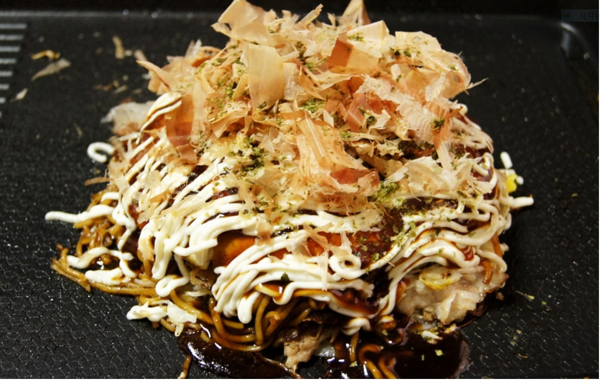

오꼬노미야끼
Okonomiyaki

재료 : 양배추 잘게썬것 3줌 듬뿍 , 부침가루 (밀가루) 6스푼 듬뿍 , 물 8스푼 , 계란 , 소금 , 후추 조금
돈까스소스 , 마요네즈 , 가쓰오부시 , 식용유
1. 부침가루 300ml와 물 300ml를 섞어 반죽을 만든 뒤 5mm정도로 채 썰어 둔 양배추와 계란을 넣고 잘섞어줍니다.
2. 얇게 저민 돼지고기 안심을 소금과 후추로 밑간합니다.
3. 팬에 기름을 두른 뒤 중불에서 돼지고기를 구워줍니다.(완전히 익힙니다.)
4. 다른 팬에 기름을 두르고 약불에 맞추고 구운 고기 세 장을 올려줍니다(고기 대신 새우를 사용해도 좋습니다). 여기에 준비한 반죽을 1~2 국자 떠서 팬에 붓고 동그란
모양으로 만들어줍니다.
5. 한 면이 다 익어 뒤집을 수 있는 상태가 되면(약 5분) 위에 덴까스 1큰술 가량을 올리고 뒤집어줍니다.
6. 앞뒤가 노릇하게 익으면 접시에 옮겨 담고 돈가스 소스와 마요네즈 소스를 벌집 모양으로 교차해서 뿌려줍니다. (오코노미야키 전용 소스용기를 쓰면 좋습니다)
7. 파래분말과 가쓰오부시를 뿌려 마무리합니다. 냉장고 열어 맥주 있는지 한 번 살펴보세요. :)
8. 팬에는 아무것도 올리지않고 베이컨 끄트머리가 아래로 가게 한다음 구워주세요.
(사진-4)